Deploy and configure Keycloak for NBS 7
In addition to the services you deployed in Deploy core Kubernetes services, Keycloak is also a core service. Keycloak is the authentication service that allows users to sign in to the NBS 7 web UI. This page covers how to install Keycloak and configure the authentication setup that the NBS 7 microservices require, then validate Traefik and Keycloak together. Complete these steps before you deploy the NBS 7 microservices.
The
kubectlcommands on this page require the cluster connection you configured in Connect to Kubernetes cluster.
On this page
- Overview
- Create the Keycloak database
- Configure the Helm chart
- Deploy Keycloak
- Access the Keycloak admin interface
- Create the NBS and nbs-users realms
- Import base users and clients
- Set the login theme (optional)
- Final validation of Traefik and Keycloak
- Import service clients and retrieve secrets
- Next steps
Overview
Keycloak provides authentication for modernization-api, nbs-gateway, dataingestion-service, and nnd-service. It uses two separate realms:
- NBS realm: Contains service clients for data ingestion, NND, and SRTE data access.
- nbs-users realm: Contains the user-facing authentication client used by the NBS gateway and the NBS application.
Both realms are created in Create the NBS and nbs-users realms.
Locate the Keycloak Helm chart in the NEDSS-Helm repository before you begin.
Create the Keycloak database
Create the Keycloak database and database user before you deploy the Helm chart.
Any compatible SQL client works for this step, including SQL Server Management Studio (SSMS).
-
Using your SQL client, authenticate into your database server:
Field Value DB Endpoint Your database endpoint Username adminPassword Your database admin password -
Run the following script (also available as nbs_keycloak.sql in the NEDSS-Helm repository) to create the Keycloak database and database user. Replace
'EXAMPLE_KCDB_PASS8675309'with a complex password that meets your organization’s standards. Store this password securely. You will need it invalues.ymlin Configure the Helm chart.use master IF NOT EXISTS(SELECT * FROM sys.databases WHERE name = 'keycloak') BEGIN CREATE DATABASE keycloak END GO USE keycloak GO BEGIN CREATE LOGIN NBS_keycloak WITH PASSWORD = 'EXAMPLE_KCDB_PASS8675309'; CREATE USER NBS_keycloak FOR LOGIN NBS_keycloak; EXEC sp_addrolemember N'db_owner', N'NBS_keycloak' END
The following screenshot shows the keycloak database created under Databases in SQL Server Management Studio, confirming the script ran successfully.
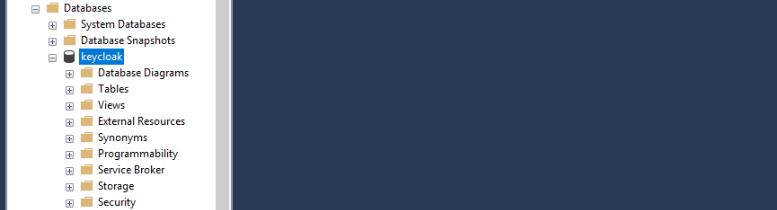
Configure the Helm chart
-
In values.yml, update the following parameters:
Parameter Template value Description adminUseradminKeycloak admin account for the web UI. Keep the template value or change it to match your organization’s naming conventions. adminPasswordEXAMPLE_KC_PASS8675309Password for the Keycloak admin user. Use a complex password that meets your organization’s standards. KC_DBmssqlDatabase type. Keep the template value. KC_DB_URLjdbc:sqlserver://EXAMPLE_DB_ENDPOINT:1433;databaseName=keycloak;encrypt=true;trustServerCertificate=true;Replace EXAMPLE_DB_ENDPOINTwith your database endpoint.KC_DB_USERNAMENBS_keycloakKeycloak database account. Keep the template value or change it to match your organization’s naming conventions. KC_DB_PASSWORDEXAMPLE_KCDB_PASS8675309Must match the password you set in Create the Keycloak database. efsFileSystemIdEXAMPLE_EFS_IDIn AWS deployments: The Amazon EFS file system ID from the AWS console or CLI. Provides persistent storage for themes. In Azure deployments: Azure Files requires different configuration.
Deploy Keycloak
Install the Keycloak Helm chart and verify the pod is running before you continue.
-
From the
chartsdirectory, install the Keycloak Helm chart. This step takes at least 5 minutes while the init container becomes available. See the README incharts/keycloakfor details.helm install keycloak --namespace default -f keycloak/values.yml keycloakAfter installation completes, the Keycloak database populates with its application tables, as shown in the following screenshot.

-
Verify the pod is running before you continue:
kubectl get pods -n default
Access the Keycloak admin interface
Use port forwarding to access the Keycloak web UI from your local machine.
Port forwarding is not supported by AWS CloudShell or Azure Cloud Shell by default. Run these commands from a system that has both network access to your Kubernetes cluster endpoint and a browser. If you completed the installation from AWS CloudShell or Azure Cloud Shell, switch to a jumpbox or desktop with network connectivity to your cluster endpoint.
-
Set up port forwarding:
export POD_NAME=$(kubectl get pods --namespace default -o name); echo "Visit http://127.0.0.1:8080/auth to use your application"; kubectl --namespace default port-forward "$POD_NAME" 8080; -
In a browser, go to
http://127.0.0.1:8080/authand select Administration Console.
-
Sign in using the
adminUserandadminPasswordvalues you configured in the Helm chart.
After you sign in, the admin console opens to the master realm welcome page.
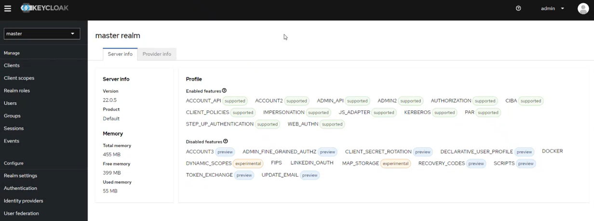
Create the NBS and nbs-users realms
Keycloak uses two realms for NBS 7: the NBS realm for service clients, and the nbs-users realm for user-facing authentication. Create both using the same procedure, with a different import file for each.
| Realm | Import file | Purpose |
|---|---|---|
| NBS | 01-NBS-realm-with-DI-client.json | Contains service clients for data ingestion, NND, and SRTE data access. Seeds the di-keycloak-client service client in the same step. |
| nbs-users | 02-nbs-users-realm.json | Provides user-facing authentication for the NBS application and NBS gateway. Contains the client used by modernization-api and nbs-gateway for OpenID Connect (OIDC) login. |
OIDC must be enabled when you deploy
modernization-apiandnbs-gateway. You configure OIDC during microservices deployment, not on this page. See Deploy NBS 7 microservices for OIDC configuration steps.
-
From the side navigation, select Create realm. The following screenshot shows the realm selector open in the master realm, where the Create realm button appears:
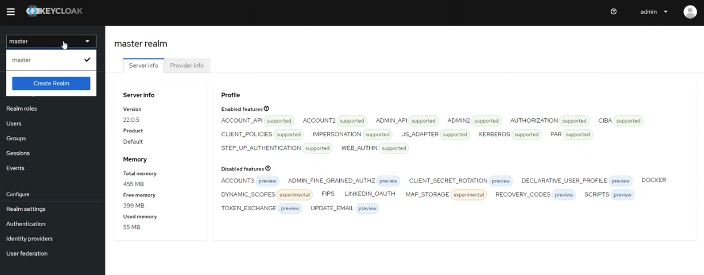
-
Upload the import file for the realm you’re creating, then select Create. The Realm name field auto-populates after upload. The following screenshot shows the NBS realm import with
01-NBS-realm-with-DI-client.jsonuploaded: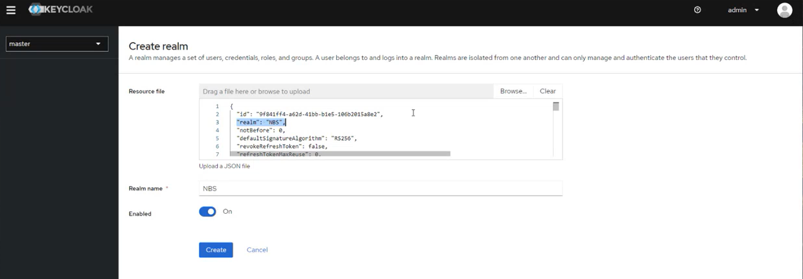
-
Verify the realm and its clients are created successfully. After you create both realms, the realm selector lists all three realms. The following screenshot shows the selector after the nbs-users realm import:
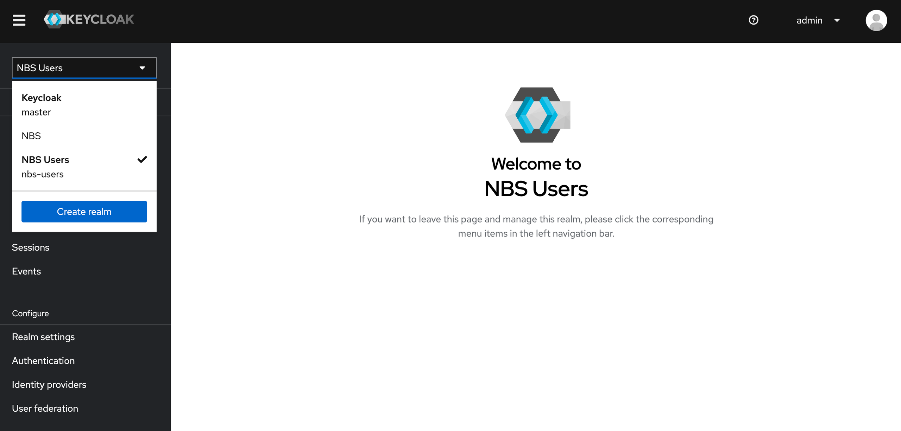
Import base users and clients
Import the base NBS users and development clients into the nbs-users realm.
-
Select the nbs-users realm, then go to Realm settings > Action > Partial Import.
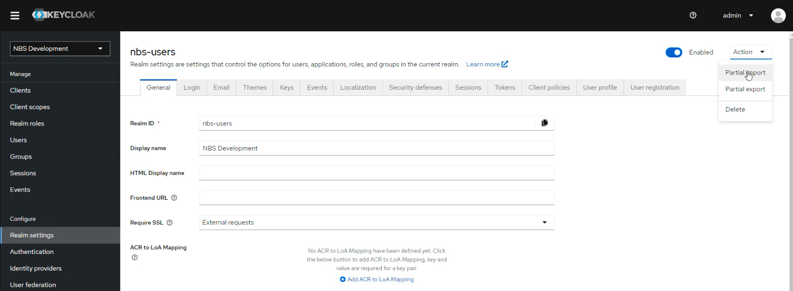
-
Upload
03-nbs-users-base-users.json, select the three users, and select Import.The Partial import dialog shows the file uploaded with the three users selected for import.
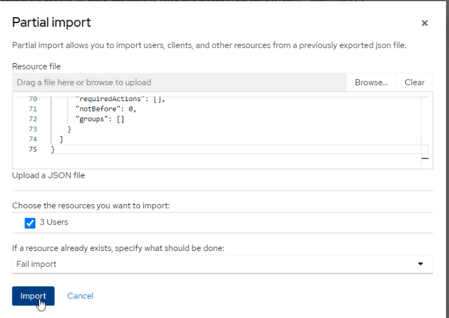
After the import completes, Keycloak confirms that all three users were added.
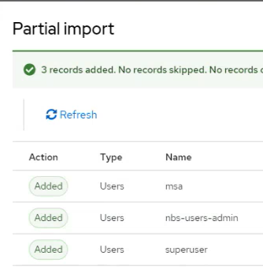
-
Upload
04-nbs-users-development-clients.json, select the one client, and select Import.The Partial import dialog shows the development client file uploaded and selected for import.
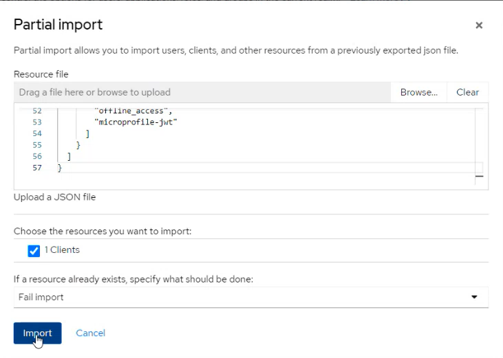
After the import completes, Keycloak confirms that the client was added.
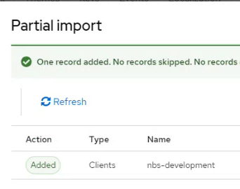
Set the login theme (optional)
You can use the pre-populated NBS login theme, keep the default Keycloak theme, or create a custom theme. The Keycloak Helm chart loads a sample NBS theme in a persistent volume mounted at /opt/keycloak/themes/nbs.
- Select the nbs-users realm.
-
Go to Realm settings > Themes > Login and select your preferred theme.
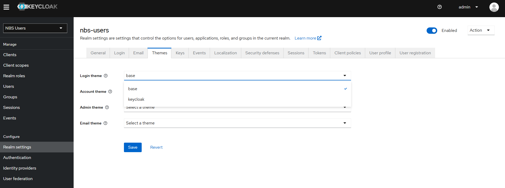
Final validation of Traefik and Keycloak
This validation depends on the DNS records from Deploy core Kubernetes services and the Keycloak configuration on this page. Use a browser to verify the following:
-
Go to
https://app.<DOMAIN_NAME.TLD>and verify that the NBS 7 Welcome page is shown. The following screenshot shows the Welcome page from the NBS demo environment. Your Welcome page will differ.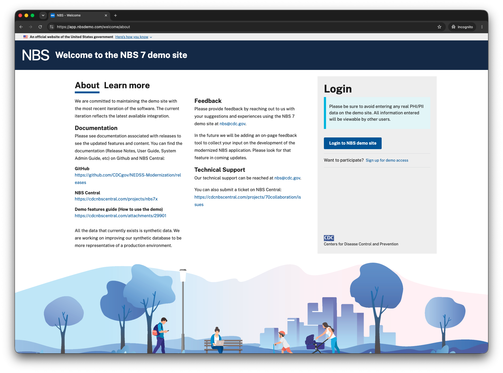
-
Select Login and verify that the Keycloak login page is shown.
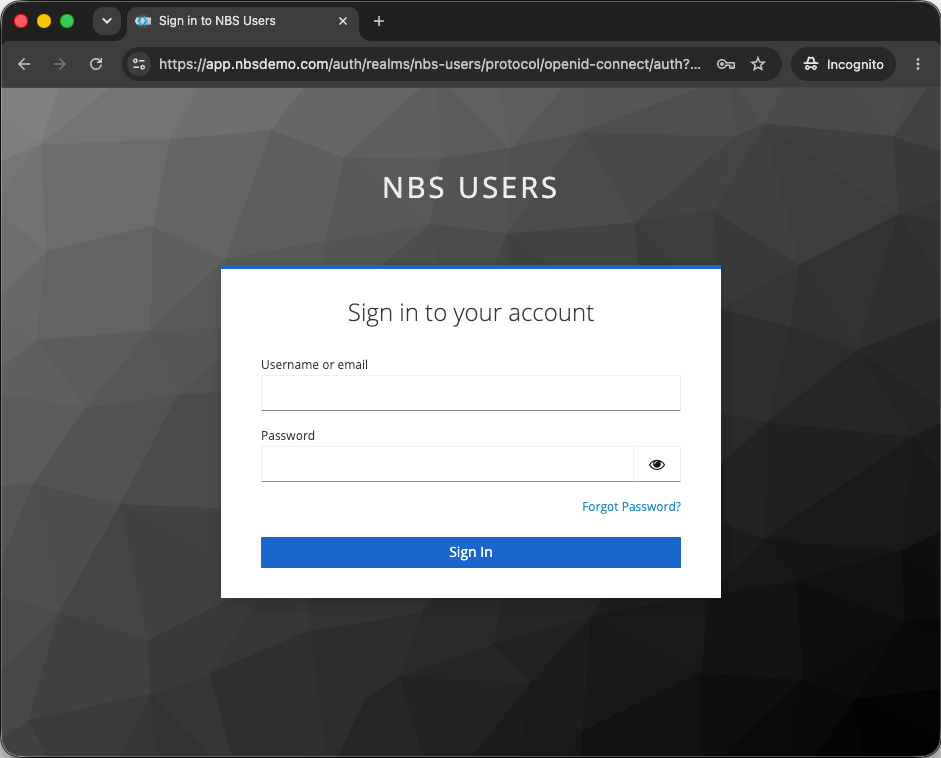
- Open your browser’s developer tools. For example, in Chrome, select View > Developer > Developer Tools.
- Sign in and verify that authentication works and that the NBS 7 Home page is shown.
-
In developer tools, select Network and select a
.jsfile. Under Headers > Response headers, verify the following values:Cache-Control: max-age=1209600, immutable Cross-Origin-Opener-Policy: same-origin X-Frame-Options: Allow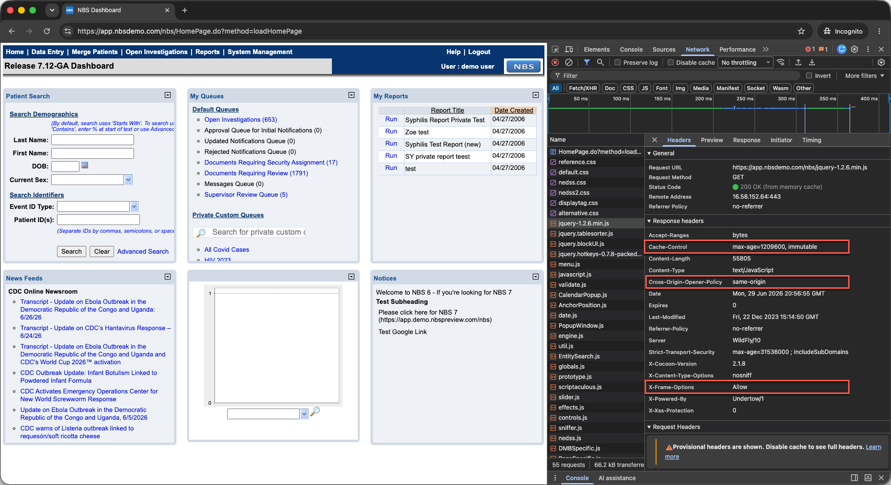
Import service clients and retrieve secrets
The imported configuration seeds a random client secret for most service clients. You can regenerate these secrets or use them as generated. Retrieve and store each secret before you proceed to microservices deployment.
| Client | Realm | Import needed | Import file | Used by |
|---|---|---|---|---|
case-notification-service | NBS | ✓ Yes | 09-nbs-users-case-notification-service.json | Case notification service |
di-keycloak-client | NBS | No | Not needed | Data ingestion service |
nbs-modernization | nbs-users | No | Not needed | OIDC login for Modernization API and NBS Gateway |
nnd-keycloak-client | NBS | ✓ Yes | 05-nbs-users-nnd-client.json | NND service |
srte-data-keycloak-client | NBS | ✓ Yes | 06-nbs-users-srte-data-client.json | SRTE data access |
Import the additional clients
For each service client that has Yes in the Import needed column of the clients table, complete the following steps:
- In the realm listed for that client, go to Realm settings, select the Action dropdown, and select Partial Import.
- Upload the import file listed for that client and select Import.
After each import completes, follow Retrieve a client secret to get the secret for that client.
Retrieve a client secret
Use the following steps to retrieve the secret for any service client in the clients table:
- In the realm listed for that client, go to Clients and select the client.
- Open the Credentials tab.
- Select the eye icon to reveal the secret and copy it.
- Store the secret securely in your organization’s secrets manager, such as AWS Secrets Manager or Azure Key Vault.
The following screenshots show this procedure for di-keycloak-client. The Credentials tab looks the same for the other clients, with the client-specific secret shown in the same field.

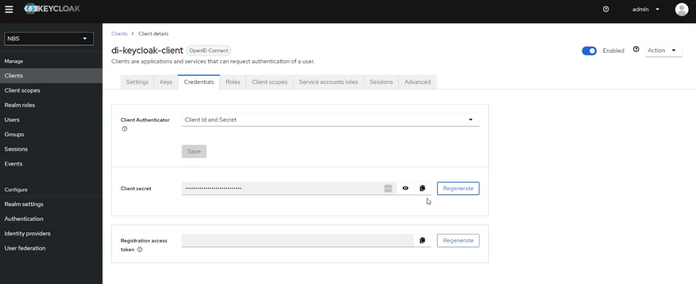
Next steps
Continue to Deploy NBS 7 microservices.